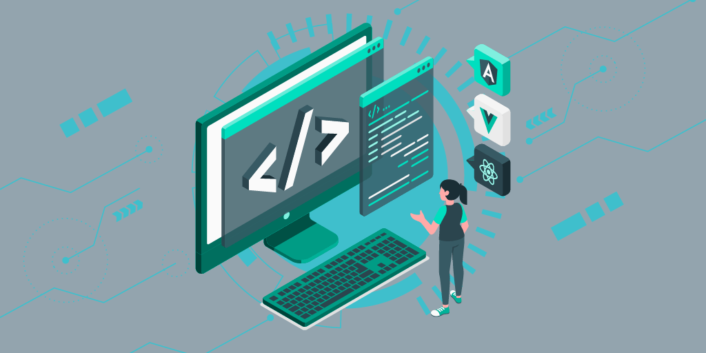
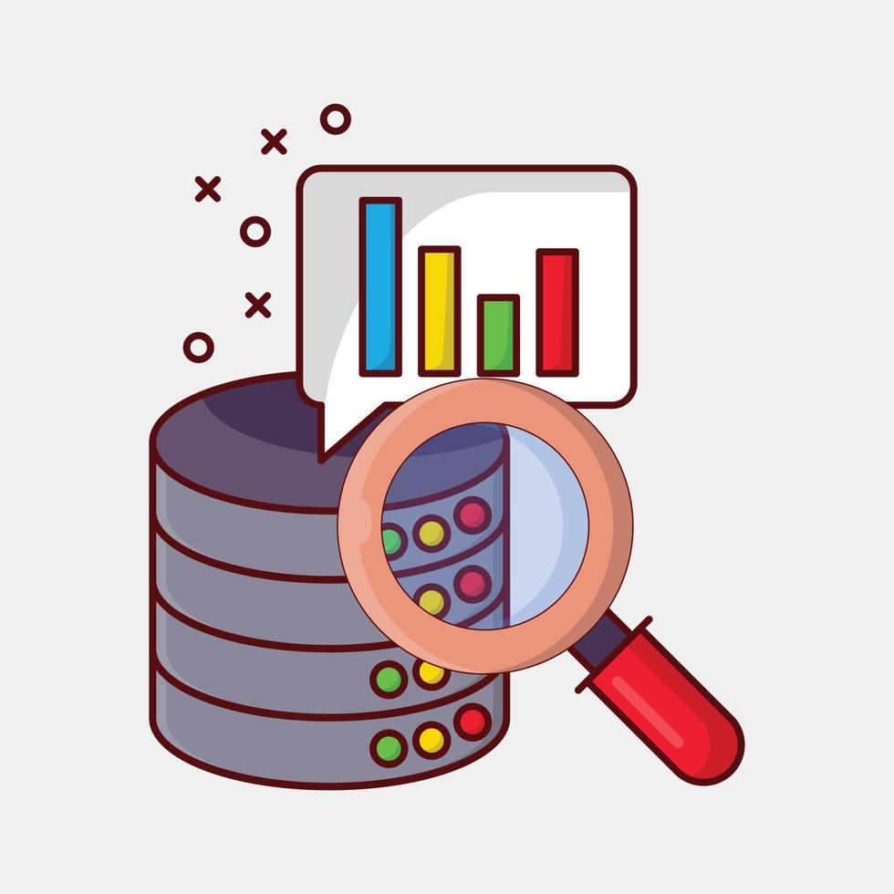

Programação Web I
Assuntos:
HTML
CSS
Outros...

Programação e Algoritmo
Assuntos:
Logica
Portugol
Algoritmos

Banco de Dados
Assuntos:
SQL
Tabelas
Estruturas e Relações
Olá! Sou um jovem de 23 anos, atualmente desbravando o mundo da tecnologia como analista júnior, com foco em Suporte e Infraestrutura. Mas não paro por aí, estou mergulhando de cabeça no universo do Desenvolvimento de Sistemas, buscando aprimorar minhas habilidades nessa área para uma transição completa no futuro. Sou movido pela curiosidade e pelo desejo constante de aprender coisas novas. Aqui nesta página, você pode descobrir um pouco mais sobre mim, dependendo do tempo que o talentoso mestre e professor João reservar para finalizar este projeto. Estou ansioso para compartilhar essa jornada com você! 😊
HTML
CSS
Outros...
Logica
Portugol
Algoritmos
SQL
Tabelas
Estruturas e Relações
| Materia | Professor | Nota |
|---|---|---|
| PROGRAMAÇÃO WEB I | MB | JOÃO E DAVI |
| PROGRAMAÇÃO E ALGORITMO | MB | JUAREZ |
| BANCO DE DADOS | MB | ALINE |